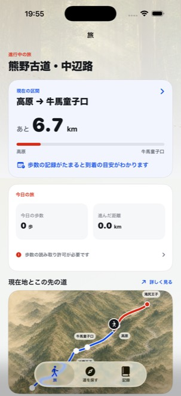
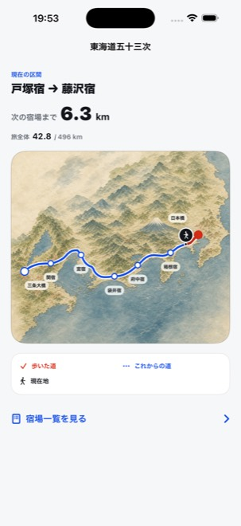
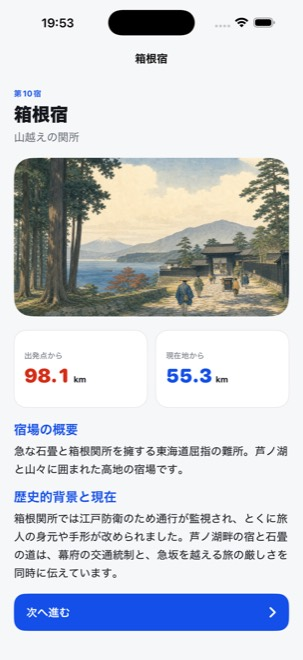
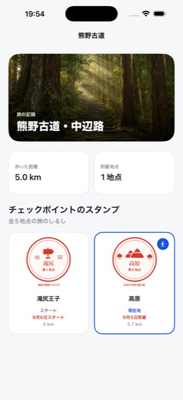
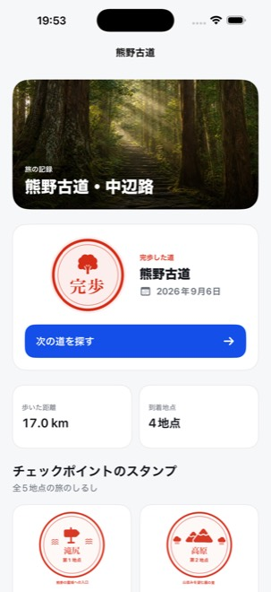

熊野古道・中辺路
滝尻王子から継桜王子へ。森と山里をたどる短い区間で、はじめての一本に選びやすい道です。
iPhoneアプリ
MICHIORIは、iPhoneのヘルスケアに記録された歩数で、熊野古道やアマルフィー海岸の道を進むバーチャル旅行アプリです。いつもの散歩や通勤が、風景と物語、スタンプの残る旅になります。
無料。熊野古道とアマルフィー海岸の道は、最後まで無料で歩けます。広告・アカウント登録はありません。iOS 17以降。
すでにお使いの方で、お困りのことがある方はサポートへ。


歩きたい一本を選ぶだけで旅が始まります。アプリを開いたまま歩く必要はありません。ヘルスケアに記録された開始後の歩数を距離に換算し、絵地図に進み具合を映します。
地点に着くと、その場所の風景と歴史を伝える短い読みものが開きます。古道の山里、地中海の町、東海道の宿場。次の地点までの残り距離が、日々の散歩の小さな目安になります。
到着した地点のスタンプと日付が、旅のパスポートに残ります。一本を歩き終えると完歩の印と日数・距離も記録され、気に入った道は何度でも歩き直せます。



滝尻王子から継桜王子へ。森と山里をたどる短い区間で、はじめての一本に選びやすい道です。
ヴィエトリからポジターノへ。地中海沿岸の実在する7地点をたどります。58kmはアプリ内の旅の距離で、現地の連続した徒歩ルートではありません。
日本橋から三条大橋へ。五十三の宿場を訪ねる長い旅です。一度の購入で全区間を歩けます。月額料金はありません。
熊野古道とアマルフィー海岸の道は、地点の物語やスタンプ、完歩の記録まで無料です。東海道五十三次は一度の購入で全区間を楽しめます。月額料金はありません。
はい。日常の散歩や通勤で歩いた分が、選んだ道の進捗になります。現地へ行く必要はなく、位置情報による追跡も行いません。現地での道案内には使えません。
ありません。ヘルスケアに記録された歩数を取り込んで旅に反映します。反映の時刻はiOSの動作状況によって変わります。歩数の読み取り許可が必要です。
送られません。歩数はお使いのiPhoneの中だけで使われ、旅の記録はiPhoneとご自身のiCloudにのみ保存されます。詳しくはプライバシーポリシーをご覧ください。
無料・広告なし・アカウント登録なし。iOS 17以降。
うまく動かないとき、ご意見をお寄せいただくときは、こちらからご連絡ください。
メールでのみ承っています。
support.michiori@gmail.com個人で開発・運営しているため、お返事までに数日いただくことがあります。不具合のご連絡は、お使いのiPhoneの機種、iOSのバージョン、アプリのバージョン、症状が出たときの操作を書き添えていただけると助かります。
まずヘルスケアAppに今日の歩数が記録されているかご確認ください。記録があるのに進まない場合は、アプリの設定画面の「ヘルスケア」で読み取りの状態を確認し、「歩数を同期」を押してください。読み取りが許可されていないときは、iPhoneの「設定」→「プライバシーとセキュリティ」→「ヘルスケア」→「MICHIORI」で「歩数」をオンにしてください。
進みます。歩数の反映はバックグラウンドでも行われ、地点への到着は通知でお知らせします。ただし反映の間隔はiOSに委ねられているため、通知が届くのはおおむね1時間ごとです。すぐに確かめたいときは、アプリを開いて設定画面の「歩数を同期」を押してください。
通知は到着・完歩・次の地点への接近の3種類で、アプリの設定画面から種類ごとにオン・オフを切り替えられます。まったく届かない場合は、iPhoneの「設定」→「通知」→「MICHIORI」で通知が許可されているかご確認ください。なお、アプリを開いている間は通知を出さず、画面内の演出でお伝えします。
同じApple AccountでiCloudをお使いであれば、旅の記録は引き継がれます。新しいiPhoneでアプリを入れ、iCloudにサインインした状態でしばらくお待ちください。iCloudをオフにしている場合、記録はそのiPhoneの中だけに保存されるため、引き継ぎはできません。
アプリの設定画面にある「購入した道を復元」をお試しください。購入時と同じApple Accountでサインインしている必要があります。買い切りの道は、同じApple Accountであれば追加の費用なくご利用いただけます。
送られません。歩数はお使いのiPhoneの中だけで使われ、旅の記録はiPhoneとご自身のiCloudにのみ保存されます。開発者がその内容を受け取ることはありません。詳しくはプライバシーポリシーをご覧ください。
iPhoneから本アプリを削除すると、端末内の記録は削除されます。iCloud上の複製は、「設定」→ ご自身の名前 →「iCloud」→「iCloudを使用中のApp」から本アプリのデータを削除することで消せます。
本アプリが何を扱い、何を扱わないかはプライバシーポリシーにまとめています。